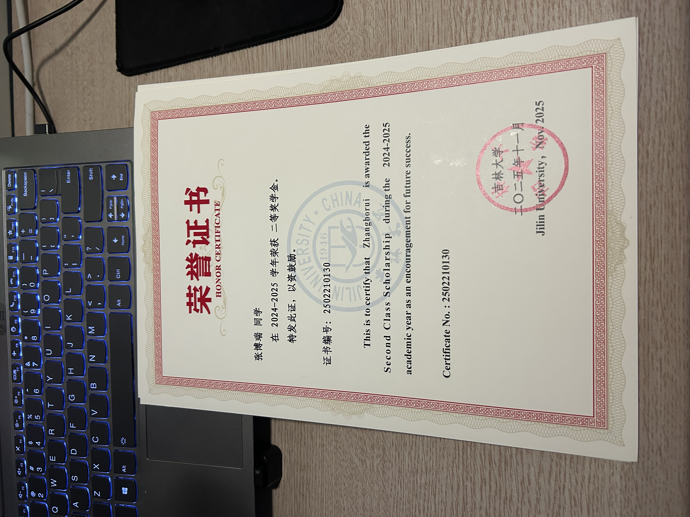
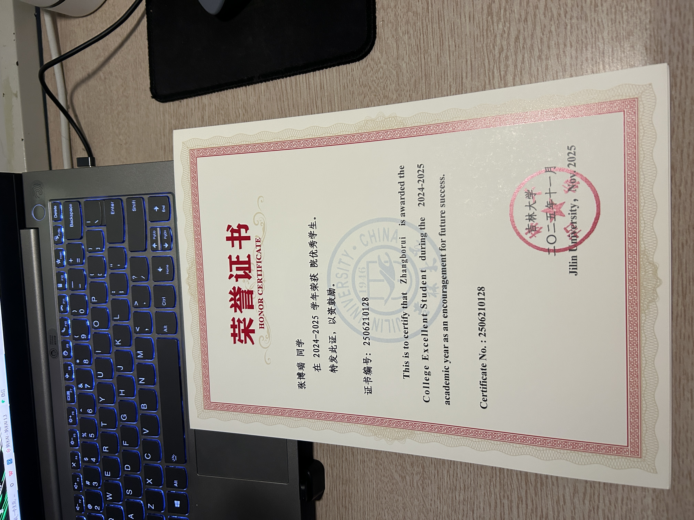

基本信息
- 出生日期：2006.01.16
- 身高/体重：183cm / 95kg
- 出生地/成长地：重庆市
- 性格类型：INFJ/INFT
教育经历
- 小学：2012-2018 天台岗小学花园校区
- 初中：2018-2021 重庆市文德中学校
- 高中：2021-2024 重庆市第十一中学校
- 大学：2024-至今 吉林大学计算机科学与技术专业
荣誉证书


特长与爱好
- 声乐、京剧、钢琴
- 乒乓球
- 各类游戏：王者荣耀(重庆市省标猪八戒)、和平精英、皇室战争、明日方舟等
- 战地系列钟爱粉
未来规划
- 考研、读研
- 进入国企工作
- 人生梦想：安稳舒适的活着